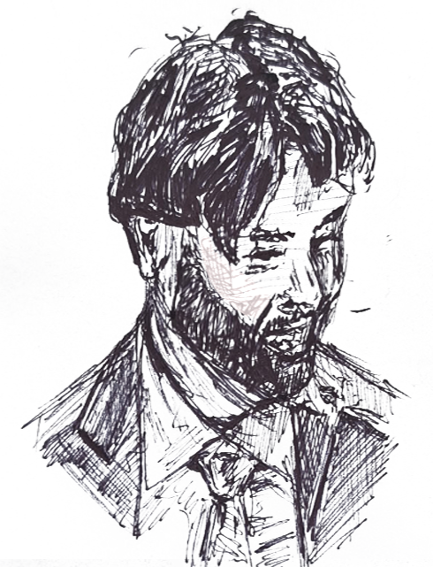

I am voracious consumer of media; at any time I am keeping up with multiple podcasts, authors, and artists, and am constantly reading. My dream girl is a reporter at Ars Tecnica who went to Brown. Separately, I also frequently angel invest and am working on LLM evals, the latter of which focuses on models' geospatial comprehension and was heavily inspired by this blog post.